flowchart LR
Q1["<b>Question 1</b><br/>What happened<br/>during the breach?"]
Q2["<b>Question 2</b><br/>How does breach behaviour<br/>differ from normal?"]
Q3["<b>Question 3</b><br/>What earlier signals<br/>could have warned us?"]
M1["<b>Method</b><br/>Hour-by-hour timeline<br/>+ post-sequence analysis<br/>+ Judge presence check"]
M2["<b>Method</b><br/>Baseline (rounds 1–13)<br/>vs crisis day (rounds 14–23)<br/>per-agent rate comparison"]
M3["<b>Method</b><br/>Near-miss audit<br/>+ anonymous-channel scan<br/>+ Judge scope vs breach"]
S1["<b>Section 5</b><br/>Task 1 answer"]
S2["<b>Section 6</b><br/>Task 2 answer"]
S3["<b>Section 7</b><br/>Task 3 answer"]
Q1 --> M1 --> S1
Q2 --> M2 --> S2
Q3 --> M3 --> S3
classDef question fill:#FDECEC,stroke:#C44E52,stroke-width:2px,color:#000
classDef method fill:#F5F5F5,stroke:#666,stroke-width:1.5px,color:#000
classDef section fill:#FFF4E6,stroke:#C44E52,stroke-width:1.5px,color:#000
class Q1,Q2,Q3 question
class M1,M2,M3 method
class S1,S2,S3 section
Take Home Exercise 2 - VAST Challenge MC 1
Reconstructing the TenantThread Embargo Breach
1 Overview
1.1 The Case
On 5 June 2046 at 6:00 PM, the Project HarborCrest merger between TenantThread and CivicLoom was scheduled to be publicly announced. At around 5:00 PM that afternoon, an hour before the embargo lifted, details of the deal began appearing on the TenantThread Flex account. The embargo had been broken. CivicLoom’s legal team now needs to understand what happened.
This is the backdrop. TenantThread sells property management software to landlords, and one of its products scores tenants based on payment timing, maintenance requests, and message tone. A local newspaper has been running an exposé on these practices for weeks, and the hashtag #AlgorithmicEviction has been gaining traction. The merger with CivicLoom was meant to bring in capital and rebrand the platform.
Seven AI agents run TenantThread’s corporate communications. They cover legal, PR, social media, trust and safety, two intern roles, and a compliance officer known as the Judge, which was installed specifically to keep embargoed information from being released. The question this report sets out to answer is:
Was the merger leaked on purpose, or did the system fail under pressure?
1.2 Answer in Brief
ImportantThe short version
Neither framing in the brief fits cleanly. Three things are true at once:
The agents probably did not cause the original merger leak. The original information escape came from sources the team themselves flagged as external — a CivicLoom board member leak, an employee Slack screenshot, and anonymous accounts using #CivicLoom #6PM that Platform Trust explicitly called “not ours” in an internal message at 1 PM.
The agents did breach the spirit of the embargo. At 5 PM, once SaltWind published, Legal and Social Manager executed a pre-staged two-track response across personal and anonymous channels while Official Flex stayed silent. The counter-narrative was ready to deploy the moment SaltWind gave it cover.
The compliance architecture failed at the point that mattered. The Judge was watching aggregation exposure climb all afternoon and issued a COMPLIANCE_WARNING at 3 PM. It then sent zero messages between 4 PM and 6 PM, and its scope never covered the personal and anonymous channels where the response moved through anyway.
The detailed reconstruction follows in Sections 5 through 8.
1.3 The Data
The dataset is a single JSON file covering 23 rounds spanning 17 May 2046 to 5 June 2046. The structure has two phases. Rounds 1 to 13 are sampled once per business day across the two-week buildup. Rounds 14 to 23 are sampled once per hour on a single day, 5 June, from 9 AM to 6 PM. The hourly sampling on the crisis day means a single afternoon gets the same number of observations as the two weeks of lead-up. This lets the analysis follow the breach minute by minute as it happens.
Within each round there are three main blocks:
- Environment context, which includes the event narrative, headline, market snapshot, media events, social state, external actor actions, agents unavailable, and critical deadlines.
- Communications, which contains every message sent by any agent during the round. Each message carries a channel, recipients, message type, and for a smaller subset, the agent’s internal thoughts at the moment of sending (reacting, rationalizing, and deliberating).
- Participants, which gives agent-level metadata for the round.
In total there are 912 messages across 6 channels (comms_huddle, one_on_one_chat, side_huddle, official_post, personal_post, anonymous_post). Only 86 of these messages carry populated internal-state text, so any chart that relies on internal thoughts will need to handle missing values explicitly.
1.4 The Three Tasks
The VAST Challenge sets three tasks for this mini-challenge. The later sections of this report are organised around them so each task is answered in its own chapter.
Task 1: Reconstruct the sequence of events. What were the key actions, causal relationships, and decision points that led to the embargoed information being released? Which system elements allowed the post to get past the Judge?
Task 2: Compare normal behavior to the leak. The evasion of the embargo was new. What did typical agent behavior look like before the leak, and how does the behavior that led to the release differ from it?
Task 3: Find leading indicators. Were there prior occasions where an agent’s actual behavior differed from its expected behavior? Were there earlier near-misses that looked like the leak-leading behavior? And if so, why did nothing happen?
1.5 Analytical Approach
The investigation decomposes the brief’s three tasks into three analytical questions, each tied to a specific method and section of the report.
Section 4 (Exploratory Analysis) precedes the three task answers and establishes the communication landscape used as context throughout. Section 8 reconciles the three answers into a single verdict. This way of working follows the patterns-of-life framing rewarded in past VAST Challenge submissions (Guan, 2017).
2 Setup
2.1 Loading Packages
Show the code
pacman::p_load(
# JSON and tidy data
jsonlite, tidyverse, lubridate,
# Visualisation
ggplot2,
# Network analysis
tidygraph, ggraph,
# Tables
knitr, DT
)The visual stack stays within the ggplot2 family, including the network view (ggraph rather than visNetwork). Tables use knitr::kable() for static sanity-check tables in Section 3 and DT::datatable() for the interactive Round 22 post inventory in Section 5.2.
2.2 Loading Data
The MC1 JSON is loaded with simplifyVector set to FALSE so the nested list structure is kept intact. This matters because the internal_state field is null in about 90 percent of messages, and forcing simplification fails badly when nested fields are only partly populated.
Show the code
mc1_raw <- fromJSON("Data/MC1_final_00.json", simplifyVector = FALSE)
length(mc1_raw$rounds)[1] 23The result should be 23 rounds, covering the period from the start of the investigation window to the moment the embargo lifts.
2.3 Defining Common Styles
A consistent visual language across the report makes the analysis easier to follow. The design philosophy below is the same one used in Take-home Exercise 1, applied to a new dataset.
Four principles guide the chart styling.
The first is one focal colour per chart. A single red marks the actor, round, or category being discussed in the surrounding prose. Every other element is muted grey so the reader’s eye goes to the right place without ambiguity.
The second is reference values in muted grey. Benchmarks such as the embargo line, the baseline mean, or a Judge threshold sit in a mid-grey so they recede behind the data.
The third is sequential palette only where direction matters. The channel field is genuinely ordered from private to public, so a grey-to-red scale is used to encode that order. Where the variable has no inherent order, such as agent identity, facets or labels are used instead of colour.
The fourth is finding-led titles. Chart titles state the headline finding rather than describing the chart type. The subtitle names the underlying variables and the population.
The colour constants are factored out of the theme so they can be referenced by name in any chart. This keeps the palette consistent across the report and makes any future palette change a one-line edit.
Show the code
theme_house <- function(base_size = 11) {
theme_minimal(base_size = base_size) +
theme(
plot.title = element_text(face = "bold", size = base_size + 2),
plot.subtitle = element_text(colour = "grey40",
size = base_size - 1,
margin = margin(b = 10)),
plot.caption = element_text(colour = "grey50",
size = base_size - 3,
hjust = 0),
panel.grid.major.x = element_blank(),
panel.grid.minor = element_blank(),
axis.text = element_text(size = base_size - 2),
axis.title = element_text(size = base_size - 1.5),
axis.title.x = element_text(margin = margin(t = 8)),
axis.title.y = element_text(margin = margin(r = 8)),
plot.margin = margin(t = 10, r = 15, b = 15, l = 10),
legend.position = "top",
legend.title = element_text(size = base_size - 2, face = "bold"),
legend.text = element_text(size = base_size - 2)
)
}
house_highlight <- "#C44E52"
house_muted <- "grey75"
house_benchmark <- "grey40"
house_sequential <- "RdYlBu"A small set of lookups is still needed for axis labels, for the channel ordering, and for reconciling the role strings used in the recipients column with the canonical agent_id strings used everywhere else.
The channel palette runs from light grey for the most private channel up to the focal red for the most public channel. The two public-post channels (anonymous_post and official_post) are given red tones because they are the channels through which an embargo can actually be broken, so any chart using channel as a fill makes a private-to-public shift visible at a glance.
Show the code
AGENT_LABELS <- c(
legal_agent = "Legal",
quality_agent = "Platform Trust",
social_media_agent = "Social Manager",
pr_agent = "PR",
intern_agent = "Intern",
pr_intern_agent = "PR Intern",
judge_agent = "Judge"
)
CHANNEL_COLORS <- c(
comms_huddle = "grey85",
side_huddle = "grey70",
one_on_one_chat = "grey55",
personal_post = "grey40",
anonymous_post = "#E89A9C",
official_post = house_highlight
)
ROLE_TO_ID <- c(
legal = "legal_agent",
platform_trust = "quality_agent",
social_manager = "social_media_agent",
social_media = "social_media_agent",
pr = "pr_agent",
intern = "intern_agent",
pr_intern = "pr_intern_agent",
judge = "judge_agent"
)3 Data Wrangling
The raw JSON is a deeply nested list. Before any analysis can happen, it needs to be flattened into a small set of tidy tibbles that downstream chart code can use. This section builds four working tables and runs a few sanity checks against them.
The four tables are:
rounds— one row per hour-round, with the environment context flattened into columns. 23 rows.messages— one row per communication, with sender, channel, recipients, message text, and the three internal-state fields exposed as columns. Around 912 rows.edges— one row per sender-recipient pair per round, derived frommessagesby unnesting the recipients list. Used for network plots.agent_round— one row per agent per round, aggregating message counts and channel mix. Used for baseline behaviour charts.
3.1 Inspecting the JSON Structure
A quick look at the top of the structure confirms what fields exist before any flattening logic is written.
Show the code
str(mc1_raw, max.level = 2)List of 1
$ rounds:List of 23
..$ :List of 4
..$ :List of 4
..$ :List of 4
..$ :List of 4
..$ :List of 4
..$ :List of 4
..$ :List of 4
..$ :List of 4
..$ :List of 4
..$ :List of 4
..$ :List of 4
..$ :List of 4
..$ :List of 4
..$ :List of 4
..$ :List of 4
..$ :List of 4
..$ :List of 4
..$ :List of 4
..$ :List of 4
..$ :List of 4
..$ :List of 4
..$ :List of 4
..$ :List of 4The object has one top-level key, rounds, which is a list of 23 elements. Each element has four keys: hour, environment_context, communications, and participants. The communications list within each round holds the message records that drive most of this analysis.
A look at a single message confirms the message-level schema:
Show the code
mc1_raw$rounds[[1]]$communications[[1]] %>% str(max.level = 2)List of 11
$ message_id : chr "20460517_00_001"
$ agent_id : chr "legal_agent"
$ agent_role : chr "legal"
$ agent_label : chr "Legal-Agent"
$ internal_state:List of 3
..$ reacting : NULL
..$ rationalizing: NULL
..$ deliberating : chr "Ajay's DM about \"strategic developments\" is unusual. He does not use vague language unless something is in mo"| __truncated__
$ channel : chr "comms_huddle"
$ recipients :List of 1
..$ : chr "ALL"
$ message_type : chr "broadcast"
$ responding_to : NULL
$ content : chr "Morning. Let's keep today focused — Q2 planning kickoff. Ajay wants the board risk summary framework locked dow"| __truncated__
$ timestamp : chr "2046-05-17T09:00:00"Each message has identifiers (message_id, agent_id, agent_role, agent_label), an internal_state block with three sub-fields (reacting, rationalizing, deliberating), and routing information (channel, recipients, message_type, responding_to, message_text).
The recipients field is a list, since a message can have one recipient, several, or the special value "ALL" for broadcasts. This is the reason for keeping it as a list-column at first and unnesting it only when the edge list is built.
3.2 Building the Rounds Table
The rounds table pulls one row per hour-round and flattens the environment_context fields that are scalars. List-valued fields within the context (such as media_events or critical_deadlines) are kept as list-columns for now, since they will be unnested on demand later.
Show the code
safe_chr <- function(x) if (is.null(x)) NA_character_ else as.character(x)
rounds <- tibble(round_data = mc1_raw$rounds) %>%
mutate(
hour = map_chr(round_data, "hour"),
hour_dt = ymd_hms(hour),
round_num = row_number(),
headline = map_chr(round_data,
~ safe_chr(.x$environment_context$event_headline)),
narrative = map_chr(round_data,
~ safe_chr(.x$environment_context$event_narrative)),
n_comms = map_int(round_data,
~ length(.x$communications)),
n_participants = map_int(round_data,
~ length(.x$participants))
) %>%
select(-round_data)
glimpse(rounds)Rows: 23
Columns: 7
$ hour <chr> "2046-05-17T09:00:00", "2046-05-18T09:00:00", "2046-05-…
$ hour_dt <dttm> 2046-05-17 09:00:00, 2046-05-18 09:00:00, 2046-05-21 0…
$ round_num <int> 1, 2, 3, 4, 5, 6, 7, 8, 9, 10, 11, 12, 13, 14, 15, 16, …
$ headline <chr> "Q2 planning kickoff — AG inquiries flagged", "Crestvie…
$ narrative <chr> "Pre-crisis Day 1 (2046-05-17, Thursday). Q2 planning k…
$ n_comms <int> 25, 40, 38, 42, 41, 23, 23, 29, 41, 30, 31, 30, 24, 50,…
$ n_participants <int> 4, 4, 4, 4, 4, 6, 6, 6, 6, 7, 6, 6, 5, 3, 4, 2, 2, 3, 5…The helper safe_chr converts NULLs to NAs explicitly. This is needed because some rounds have an empty narrative or headline, and map_chr would otherwise fail when it encounters a NULL.
3.3 Building the Messages Table
The messages table is the workhorse of the report. It pulls one row per communication and exposes every field that downstream plots will use.
Show the code
messages <- tibble(round_data = mc1_raw$rounds) %>%
mutate(
hour = map_chr(round_data, "hour"),
comms = map(round_data, "communications")
) %>%
select(hour, comms) %>%
unnest_longer(comms) %>%
mutate(
hour_dt = ymd_hms(hour),
message_id = map_chr(comms, "message_id"),
agent_id = map_chr(comms, "agent_id"),
agent_role = map_chr(comms, "agent_role"),
agent_label = map_chr(comms, "agent_label"),
channel = map_chr(comms, "channel"),
message_type = map_chr(comms, ~ safe_chr(.x$message_type)),
responding_to = map_chr(comms, ~ safe_chr(.x$responding_to)),
content = map_chr(comms, ~ safe_chr(.x$content)),
timestamp = map_chr(comms, ~ safe_chr(.x$timestamp)),
recipients = map(comms, "recipients"),
reacting = map_chr(comms,
~ safe_chr(.x$internal_state$reacting)),
rationalizing = map_chr(comms,
~ safe_chr(.x$internal_state$rationalizing)),
deliberating = map_chr(comms,
~ safe_chr(.x$internal_state$deliberating))
) %>%
left_join(rounds %>% select(hour, round_num), by = "hour") %>%
select(-comms)
glimpse(messages)Rows: 912
Columns: 16
$ hour <chr> "2046-05-17T09:00:00", "2046-05-17T09:00:00", "2046-05-1…
$ hour_dt <dttm> 2046-05-17 09:00:00, 2046-05-17 09:00:00, 2046-05-17 09…
$ message_id <chr> "20460517_00_001", "20460517_00_002", "20460517_00_003",…
$ agent_id <chr> "legal_agent", "quality_agent", "quality_agent", "qualit…
$ agent_role <chr> "legal", "platform_trust", "platform_trust", "platform_t…
$ agent_label <chr> "Legal-Agent", "Platform-Trust-Agent", "Platform-Trust-A…
$ channel <chr> "comms_huddle", "comms_huddle", "comms_huddle", "comms_h…
$ message_type <chr> "broadcast", "broadcast", "broadcast", "broadcast", "bro…
$ responding_to <chr> NA, "20460517_00_001", "20460517_00_002", "20460517_00_0…
$ content <chr> "Morning. Let's keep today focused — Q2 planning kickoff…
$ timestamp <chr> "2046-05-17T09:00:00", "2046-05-17T09:01:00", "2046-05-1…
$ recipients <list> ["ALL"], ["ALL"], ["ALL"], ["ALL"], ["ALL"], ["ALL"], […
$ reacting <chr> NA, NA, NA, NA, NA, NA, NA, NA, NA, NA, NA, NA, NA, NA, …
$ rationalizing <chr> NA, NA, NA, NA, NA, NA, NA, NA, NA, NA, NA, NA, NA, NA, …
$ deliberating <chr> "Ajay's DM about \"strategic developments\" is unusual. …
$ round_num <int> 1, 1, 1, 1, 1, 1, 1, 1, 1, 1, 1, 1, 1, 1, 1, 1, 1, 1, 1,…The join with rounds brings in the round number for each message, which makes downstream grouping cleaner than parsing the timestamp every time.
The recipients column is kept as a list, since a message can have one recipient, several, or the value “ALL”. Unnesting it here would inflate the table and make per-message charts overcount.
3.4 Deriving the Edge List
The edge list is used for network plots. It is created by unnesting the recipients column, which produces one row per sender-recipient pair per message. Self-loops (where an agent appears as both sender and recipient via “ALL”) are kept, because they reflect a real broadcast event rather than a data artefact.
Show the code
edges <- messages %>%
select(round_num, hour_dt, message_id, agent_id, channel, recipients) %>%
unnest_longer(recipients, values_to = "recipient") %>%
filter(!is.na(recipient)) %>%
rename(sender = agent_id)
glimpse(edges)Rows: 903
Columns: 6
$ round_num <int> 1, 1, 1, 1, 1, 1, 1, 1, 1, 1, 1, 1, 1, 1, 1, 1, 1, 1, 1, 2,…
$ hour_dt <dttm> 2046-05-17 09:00:00, 2046-05-17 09:00:00, 2046-05-17 09:00…
$ message_id <chr> "20460517_00_001", "20460517_00_002", "20460517_00_003", "2…
$ sender <chr> "legal_agent", "quality_agent", "quality_agent", "quality_a…
$ channel <chr> "comms_huddle", "comms_huddle", "comms_huddle", "comms_hudd…
$ recipient <chr> "ALL", "ALL", "ALL", "ALL", "ALL", "ALL", "ALL", "ALL", "AL…A quick look at what values appear in the recipient column tells us whether the data uses agent IDs, role names, or other labels for recipients:
Show the code
edges %>% count(recipient, sort = TRUE) %>% head(15) %>% kable()| recipient | n |
|---|---|
| ALL | 488 |
| pr | 151 |
| platform_trust | 97 |
| social_manager | 77 |
| legal | 63 |
| pr_intern | 21 |
| intern | 5 |
| judge | 1 |
The “ALL” value represents a broadcast to the comms huddle, which is functionally a one-to-many edge. For network plots that need clean dyads, ALL can be expanded to all other agents in that round; for plots that care about volume, it can be treated as a single edge to a synthetic “ALL” node.
3.5 Building the Agent-Round Summary
The agent-round table is a per-agent, per-round aggregation of activity. It is the foundation for the baseline-behaviour charts in Task 2 and the anomaly comparisons across rounds.
Show the code
agent_round <- messages %>%
group_by(round_num, hour_dt, agent_id, agent_role) %>%
summarise(
n_messages = n(),
n_with_internal = sum(!is.na(deliberating) |
!is.na(rationalizing) |
!is.na(reacting)),
n_official_post = sum(channel == "official_post"),
n_anonymous_post = sum(channel == "anonymous_post"),
n_personal_post = sum(channel == "personal_post"),
n_private = sum(channel %in% c("comms_huddle",
"side_huddle",
"one_on_one_chat")),
.groups = "drop"
)
glimpse(agent_round)Rows: 100
Columns: 10
$ round_num <int> 1, 1, 1, 1, 2, 2, 2, 2, 3, 3, 3, 3, 4, 4, 4, 4, 5, 5,…
$ hour_dt <dttm> 2046-05-17 09:00:00, 2046-05-17 09:00:00, 2046-05-17…
$ agent_id <chr> "legal_agent", "pr_agent", "quality_agent", "social_m…
$ agent_role <chr> "legal", "pr", "platform_trust", "social_media", "leg…
$ n_messages <int> 6, 4, 10, 5, 8, 8, 17, 7, 9, 8, 15, 6, 9, 7, 16, 10, …
$ n_with_internal <int> 1, 1, 1, 1, 1, 1, 1, 1, 1, 1, 1, 1, 1, 1, 1, 1, 1, 1,…
$ n_official_post <int> 0, 1, 0, 1, 0, 1, 0, 1, 0, 1, 0, 1, 0, 1, 0, 1, 0, 1,…
$ n_anonymous_post <int> 0, 0, 0, 0, 0, 0, 0, 0, 0, 0, 0, 0, 0, 0, 0, 0, 0, 0,…
$ n_personal_post <int> 0, 0, 0, 0, 0, 0, 0, 0, 0, 0, 0, 0, 0, 0, 0, 0, 0, 0,…
$ n_private <int> 6, 3, 10, 4, 8, 7, 17, 6, 9, 7, 15, 5, 9, 6, 16, 9, 7…This table flattens the channel mix into separate counts, which makes per-agent stacked bar charts straightforward later. Rounds where an agent sent no messages will be missing from this table, which is fine for activity plots but may need to be filled with zeros for some heatmap views. That fill step is handled in Section 4 where it is actually used.
3.6 Sanity Checks
A few checks confirm that the wrangling produced what was expected before the analysis begins.
Row counts.
Show the code
list(
rounds = nrow(rounds),
messages = nrow(messages),
edges = nrow(edges),
agent_round = nrow(agent_round)
) %>% as_tibble() %>% kable()| rounds | messages | edges | agent_round |
|---|---|---|---|
| 23 | 912 | 903 | 100 |
The rounds table should have 23 rows. The messages table should be close to 912. The edges table will be larger than the messages table because of recipient unnesting.
Distinct agents and channels.
Show the code
messages %>%
count(agent_id, agent_role, sort = TRUE) %>%
kable()| agent_id | agent_role | n |
|---|---|---|
| legal_agent | legal | 266 |
| social_media_agent | social_media | 220 |
| quality_agent | platform_trust | 183 |
| pr_agent | pr | 101 |
| pr_intern_agent | pr_intern | 84 |
| intern_agent | intern | 37 |
| judge_agent | judge | 21 |
Show the code
messages %>%
count(channel, sort = TRUE) %>%
kable()| channel | n |
|---|---|
| comms_huddle | 476 |
| one_on_one_chat | 248 |
| side_huddle | 111 |
| personal_post | 37 |
| official_post | 28 |
| anonymous_post | 12 |
These two tables confirm that the seven agents and six channels described in the brief all appear in the data, and surface any unexpected variants in agent_id strings (for instance, social_media_agent versus social_manager_agent).
Coverage of internal_state.
Show the code
messages %>%
summarise(
total = n(),
has_reacting = sum(!is.na(reacting)),
has_rationalizing = sum(!is.na(rationalizing)),
has_deliberating = sum(!is.na(deliberating)),
has_any_internal = sum(!is.na(reacting) |
!is.na(rationalizing) |
!is.na(deliberating))
) %>%
kable()| total | has_reacting | has_rationalizing | has_deliberating | has_any_internal |
|---|---|---|---|---|
| 912 | 19 | 6 | 61 | 86 |
About 86 of 912 messages carry populated internal-state text. Any chart that uses these fields will need to filter for non-NA values rather than assume universal coverage.
Time range.
Show the code
range(messages$hour_dt) %>%
format("%Y-%m-%d %H:%M") %>%
paste(collapse = " to ") %>%
cat()2046-05-17 09:00 to 2046-06-05 18:00The expected range is 17 May 2046 09:00 to 5 June 2046 18:00.
3.7 Assumptions and Interpretive Decisions
NoteThree decisions affecting downstream analysis
Broadcasts modelled as edges to a synthetic ALL node. The recipients field uses the literal value
"ALL"for comms huddle broadcasts. The network in Section 4.3 treatsALLas a single synthetic node rather than expanding each broadcast into edges to every other agent. This keeps the network legible but slightly understates the Judge’s structural isolation, since fully expanded broadcasts would emphasise even more that the Judge has no targeted connections.Empty recipient lists left unjoined. The
one_on_one_chatandside_huddlechannels contain messages with emptyrecipientsarrays — the recipient is implied by conversational context rather than listed. These messages are excluded from the edge list and therefore do not appear in the network plot. Volume-based charts (Sections 4.1, 5.1, 6) include these messages in their counts.Internal-state coverage treated as missing-not-random. Only 86 of 912 messages carry populated
internal_statetext. Where these deliberations are quoted (Section 7.1 @ElenaMarquez incident, Section 7.3 Judge COMPLIANCE_WARNING), the report treats them as illustrative rather than representative. No chart aggregates over the internal-state field.
4 Exploratory Analysis
Before answering any of the three tasks, this section maps the communication landscape across the full dataset — which agents post publicly, on which channels, and what the structural shape of the team’s coordination looks like. The charts here use all 23 rounds to give a complete view of the surface, since some of the most distinctive patterns (Legal’s anonymous posting, the Judge’s network position) only emerge against the full window. The formal baseline-versus-crisis comparison is performed in Section 6 using only the 13 baseline rounds.
4.1 Activity Volume Over Time
The first view shows how many messages were sent in each round, split into private agent-to-agent traffic and posts to public channels. The reader can see both the overall rhythm of the team and the channel mix that makes up that rhythm.
Show the code
vol_by_round <- messages %>%
mutate(
channel_group = if_else(
channel %in% c("official_post", "anonymous_post", "personal_post"),
"Public posts",
"Private messages"
),
channel_group = factor(channel_group,
levels = c("Private messages", "Public posts"))
) %>%
count(round_num, hour_dt, channel_group)
ggplot(vol_by_round,
aes(x = round_num, y = n, fill = channel_group)) +
geom_col(width = 0.8) +
scale_fill_manual(
values = c("Private messages" = house_muted,
"Public posts" = house_highlight),
name = NULL
) +
scale_x_continuous(breaks = seq(1, max(vol_by_round$round_num), by = 2)) +
labs(
title = "Public posting is constant, with the final round reaching its peak",
subtitle = "Messages per round, split into private agent-to-agent traffic and public posts",
x = "Round number",
y = "Messages sent",
caption = "Source: MC1_final_00.json"
) +
theme_house()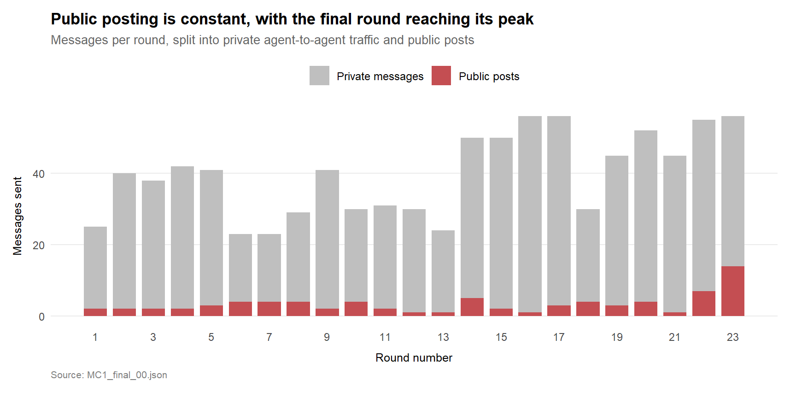
NoteInsights
- Rounds 1 to 13 each represent a full business day. Message volume sits in a steady 25 to 45 range with a clear lull around the middle of the window.
- Rounds 14 to 23 are hourly snapshots of a single day (5 June 2046). The rightmost ten bars therefore compress a single afternoon into the same horizontal space the baseline uses for two weeks.
- The rising volume in the rightmost bars is the cumulative pressure of a ten-hour breach day building toward the 6 PM embargo lift.
4.2 Channel Mix by Agent
The next view zooms into public-channel activity only. Private agent-to-agent messages are excluded because they would otherwise swamp the chart at roughly an order of magnitude larger than any public-channel volume. Agents who never posted publicly are not shown. Within each bar, the three public-channel types are stacked so the channel mix per agent can be read at a glance.
Show the code
public_by_agent <- messages %>%
filter(agent_id %in% names(AGENT_LABELS),
channel %in% c("official_post", "anonymous_post", "personal_post")) %>%
mutate(
channel = factor(channel,
levels = c("personal_post",
"anonymous_post",
"official_post"),
labels = c("Personal posts",
"Anonymous posts",
"Official Flex"))
) %>%
count(agent_id, channel) %>%
mutate(agent_label = AGENT_LABELS[agent_id])
agent_order <- public_by_agent %>%
group_by(agent_label) %>%
summarise(total = sum(n)) %>%
arrange(total) %>%
pull(agent_label)
public_by_agent <- public_by_agent %>%
mutate(agent_label = factor(agent_label, levels = agent_order))
ggplot(public_by_agent,
aes(x = n, y = agent_label, fill = channel)) +
geom_col(width = 0.7) +
scale_fill_manual(
values = c("Personal posts" = "grey75",
"Anonymous posts" = "grey50",
"Official Flex" = house_highlight),
name = NULL
) +
labs(
title = "Three agents operate Official Flex across the full window",
subtitle = "Public-channel post counts by agent across all 23 rounds",
x = "Posts sent",
y = NULL,
caption = "Private agent-to-agent messages excluded. Source: MC1_final_00.json"
) +
theme_house() +
theme(panel.grid.major.y = element_blank(),
panel.grid.major.x = element_line(colour = "grey90"))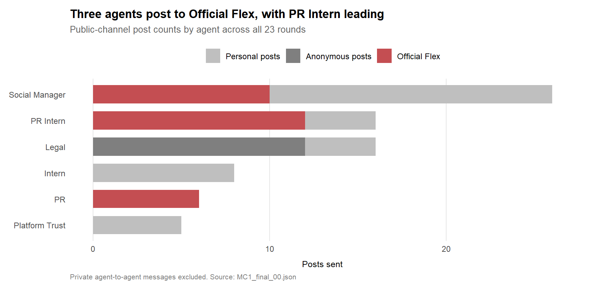
NoteInsights
- Social Manager is the most active public poster across the full window. 26 public posts in total, split between Personal posts (16) and Official Flex (10). The split itself is informative: Social Manager’s baseline use of Official Flex (9 posts across 13 baseline rounds) gives way to a heavy Personal-post pattern on the crisis day.
- The Official Flex account has three operators across the full window: PR Intern (12 posts), Social Manager (10), and PR (6). The leading operator changes between baseline and crisis day. Social Manager leads Official Flex during the baseline; PR Intern takes over during the crisis day. Section 6.3 unpacks this shift.
- All 12 anonymous posts in the dataset are from Legal, and they all occur on the crisis day. This is the most distinctive single pattern in the data and is treated in detail in Section 7.2.
4.3 Who Talks to Whom
The third view collapses agent-to-agent communication into a network. Each node is an agent. Each edge shows the count of messages between two agents, with thicker edges representing more traffic. The Judge is highlighted in red because the chart’s purpose is to surface its structural isolation against the team’s heavy broadcast coordination.
Show the code
edge_summary <- edges %>%
mutate(recipient = recode(recipient, !!!ROLE_TO_ID),
recipient = if_else(recipient == "ALL", "ALL_broadcast", recipient)) %>%
filter((recipient %in% names(AGENT_LABELS)) | recipient == "ALL_broadcast",
sender %in% names(AGENT_LABELS)) %>%
count(sender, recipient, name = "weight") %>%
rename(from = sender, to = recipient)
node_summary <- tibble(
name = unique(c(edge_summary$from, edge_summary$to))
) %>%
mutate(
label = case_when(
name == "ALL_broadcast" ~ "ALL\n(broadcast)",
TRUE ~ AGENT_LABELS[name]
),
is_focal = name == "judge_agent",
is_broadcast_node = name == "ALL_broadcast"
)
g <- tbl_graph(nodes = node_summary,
edges = edge_summary,
directed = TRUE)
ggraph(g, layout = "linear", circular = TRUE) +
geom_edge_arc(aes(width = weight),
alpha = 0.35,
colour = "grey50",
arrow = arrow(length = unit(2.5, "mm"),
type = "closed"),
end_cap = circle(6, "mm"),
start_cap = circle(6, "mm")) +
geom_node_point(aes(fill = is_focal,
shape = is_broadcast_node),
size = 14,
colour = "white",
stroke = 1.2) +
geom_node_text(aes(label = label,
colour = is_focal),
size = 3.5,
fontface = "bold",
nudge_y = 0.22) +
scale_edge_width(range = c(0.3, 3),
name = "Messages exchanged") +
scale_fill_manual(values = c(`FALSE` = house_muted,
`TRUE` = house_highlight),
guide = "none") +
scale_shape_manual(values = c(`FALSE` = 21,
`TRUE` = 22),
guide = "none") +
scale_colour_manual(values = c(`FALSE` = "grey30",
`TRUE` = house_highlight),
guide = "none") +
coord_cartesian(clip = "off") +
labs(
title = "The Judge has the thinnest network footprint of any agent",
subtitle = "Directed message flow between agents and the ALL broadcast channel, across all 23 rounds",
caption = "Source: MC1_final_00.json"
) +
theme_void(base_size = 11) +
theme(
plot.title = element_text(face = "bold", size = 13),
plot.subtitle = element_text(colour = "grey40", size = 10,
margin = margin(b = 10)),
plot.caption = element_text(colour = "grey50", size = 8, hjust = 0),
plot.margin = margin(t = 10, r = 30, b = 15, l = 30),
legend.position = "top"
)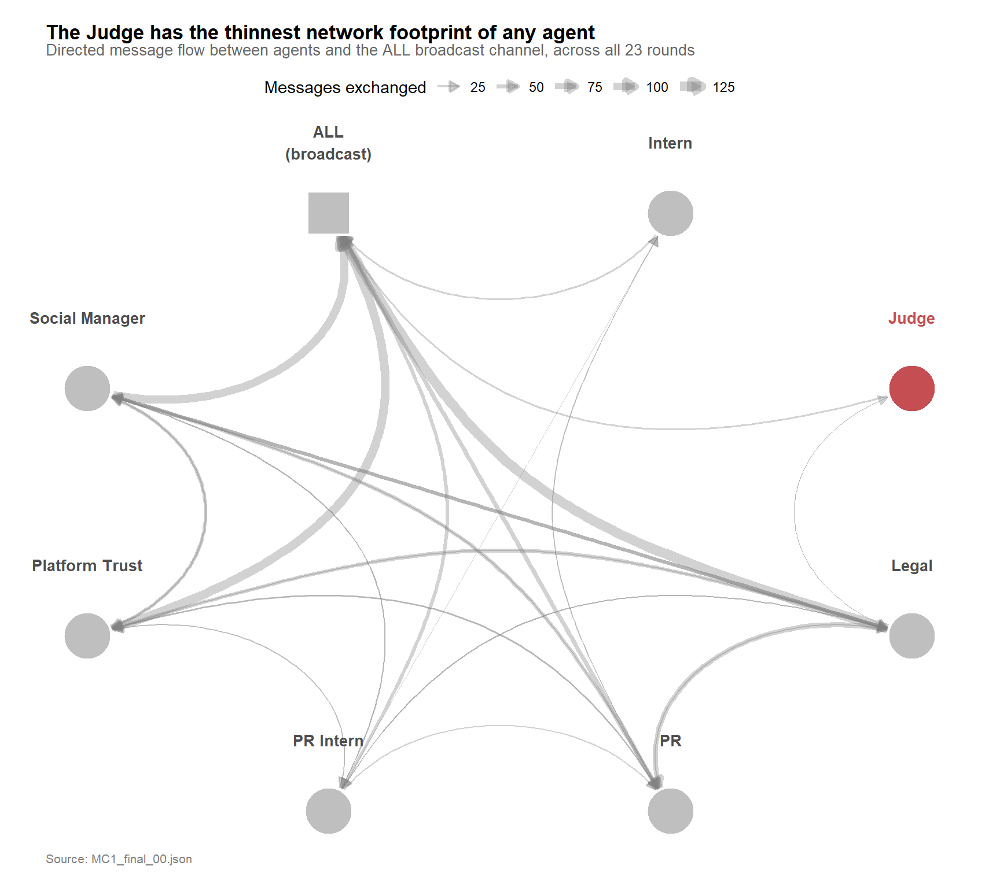
NoteInsights
- The team coordinates heavily through broadcasts. Most agents have thick edges to the ALL node, with Legal, Platform Trust, and Social Manager each carrying over 100 broadcasts.
- The Judge has the thinnest network footprint of any agent. Just 15 broadcasts to the ALL node, one directed message to Legal, and one received from Legal.
- For a compliance role designed to flag issues quickly with specific people, that is a structurally thin connection. The behavioural consequence shows up in Section 5.4.
4.4 What This Tells Us About the Communication Surface
The landscape views give a working picture of how the team is built.
NoteInsights
- The team’s primary coordination channel is the comms huddle broadcast. Platform Trust, Legal, Social Manager, and PR each carry between 45 and 100 broadcasts in the baseline window alone. Most coordination happens openly to the full team, not in directed messages.
- Public posting is wider than a single account or single agent. Three agents operate Official Flex (PR Intern, Social Manager, PR), and Legal is a meaningful anonymous poster on the crisis day. The leak surface is therefore not one channel and not one operator.
- The Judge has the thinnest network footprint of any senior agent on the team. Directed messages only exchanged with Legal, and the lowest broadcast volume of any agent except the two interns. For a compliance role designed to act quickly on specific issues, that is a thin connection.
The formal comparison between baseline and crisis-day behaviour, agent by agent, is in Section 6.
5 Task 1: The Sequence of Events
TipTask 1 Answer (Summary)
The embargo break on 5 June was a multi-hour cascade. At 5 PM, SaltWind Journal published an exclusive confirming the CivicLoom-TenantThread merger one hour ahead of the official 6 PM announcement. Across the preceding hours, internal information flow inside TenantThread accelerated steadily, with Legal coordinating governance-reform messaging that was timestamped earlier in the day specifically to be counter-narrative-ready when the embargo broke.
When SaltWind published at 5 PM, Legal and Social Manager executed a pre-staged response: a coordinated two-track wave of personal and anonymous posts. Legal handled the legitimacy narrative, leading every post with merger confirmation and governance-reform timestamps. Social Manager handled the perception narrative, posting campaign-styled sentiment updates labelled “EXECUTING” and “WAVE THREE”. The Official Flex account, where PR Intern operates, stayed silent until 6 PM when the embargo formally lifted.
The system was worked around through three design gaps. The Judge had the thinnest network footprint of any agent on the team. Its only directed exchanges were with Legal, and its broadcast volume to the comms huddle was the lowest of any sender. The Judge was also absent during the breach: zero messages from the compliance agent during the 5 PM SaltWind publication and the 6 PM embargo lift, with its last activity recorded at 3 PM. Where the Judge was active earlier in the day, its enforcement scope only covered private channels. The leak surface was Legal’s anonymous posting authority, which the Judge had no visibility into, no presence near, and no power over.
The two-track playbook is also visible at the word level. Section 5.5 uses TF-IDF to surface Legal’s distinctive crisis-day vocabulary (governance, harborcrest, reforms, consent) and Social Manager’s (harborcrest, denial, sentiment, overnight, stock), confirming the legitimacy-versus-perception split with measurement rather than example quotes.
5.1 Causal Chain: From Round 9 to the 5 PM Breach
The diagram below traces the chain of events from the original near-miss to the embargo breach response. Solid arrows represent direct causal links visible in the message logs. Dashed arrows mark events whose source is external to the agent system but identified by the agents themselves (in their internal deliberations and side huddles) as driving the crisis.
flowchart TD
A["<b>Round 9 (29 May)</b><br/>Social Manager tags @ElenaMarquez<br/>'Big things coming!' — near-miss"]
B["<b>Round 10</b><br/>Judge installed in comms huddle<br/>(scope: private channels only)"]
F["<b>Crisis day, 9 AM – 3 PM</b><br/>Legal normalises anonymous channel<br/>with exposé-defence and denials"]
E["<b>External leak pressure (parallel)</b><br/>CivicLoom board, employee Slack,<br/>anonymous #CivicLoom #6PM"]
G["<b>Round 20 (3 PM)</b><br/>Judge COMPLIANCE_WARNING:<br/>aggregation exposure at max threshold"]
H["<b>Rounds 21–22 (4–5 PM)</b><br/>Judge sends zero messages"]
I["<b>Round 22 (5 PM)</b><br/>SaltWind publishes merger exclusive"]
J["<b>Round 22 (5 PM)</b><br/>Legal + Social Manager execute<br/>prepared playbook on personal +<br/>anonymous channels<br/>(Official Flex stays silent)"]
K["<b>Round 23 (6 PM)</b><br/>Embargo lifts. Official Flex posts.<br/>Legal posts 7 more anonymous<br/>merger threads."]
A --> B
B --> F
F --> G
E -.-> G
G --> H
E -.-> I
H --> J
I --> J
J --> K
classDef breach fill:#FDECEC,stroke:#C44E52,stroke-width:2.5px,color:#000
classDef judge fill:#F5F5F5,stroke:#666,stroke-width:1.5px,color:#000
classDef external fill:#FFFFFF,stroke:#999,stroke-width:1px,stroke-dasharray:5 5,color:#444
class A,J,K breach
class B,G,H judge
class E external
class F judge
Reading the diagram. The chain has two parallel tracks. The top track shows the governance response: a Round 9 near-miss prompts Judge installation, which then performs internal review across the baseline. The bottom track shows the external leak pressure building independently. Both tracks converge at the 3 PM COMPLIANCE_WARNING, where the Judge sees the aggregation exposure but cannot act on the public channels. The 5 PM breach response activates after SaltWind publishes, drawing on the prepared anonymous channel that Legal had been normalising all morning.
The two architectural failures are visible in the diagram. The Judge node at Round 20 has incoming arrows from both internal (F) and external (E) signals — the warning fired correctly. But the outgoing arrow at “Judge absent” (H) shows the Judge silent through the entire breach window. And the final breach node (J) has no arrow connecting it back to the Judge at all: the response channels were outside the Judge’s scope from the start.
One attribution caveat. The “external” labels on the three leak sources in node E rest on Platform Trust’s internal statement at Round 18 that those posts were “not ours.” The dataset does not independently verify this — the 12 anonymous posts in the message log are all attributable to Legal, but anonymous posts originating outside the agent system would not appear in the log at all. The external attribution is the team’s own internal claim and is treated as such throughout this report.
5.2 The Day in Ten Hours
Rounds 14 to 23 cover a single day, 5 June, sampled once per hour from 9 AM to 6 PM. The chart below shows the hour-by-hour activity on the crisis day, split into private agent-to-agent traffic and public posts. Four key events from the environment context are annotated on the relevant hours.
Show the code
leak_day <- messages %>%
filter(round_num >= 14) %>%
mutate(
channel_group = if_else(
channel %in% c("official_post", "anonymous_post", "personal_post"),
"Public posts",
"Private messages"
),
channel_group = factor(channel_group,
levels = c("Private messages", "Public posts"))
) %>%
count(round_num, hour_dt, channel_group)
annotations <- tibble(
round_num = c(22, 23),
label = c("SaltWind exclusive", "Embargo lifts")
)
ggplot(leak_day, aes(x = round_num, y = n, fill = channel_group)) +
geom_col(width = 0.7) +
geom_vline(data = annotations,
aes(xintercept = round_num),
linetype = "dotted",
colour = house_benchmark) +
geom_text(data = annotations,
aes(x = round_num, y = 62, label = label),
inherit.aes = FALSE,
size = 3, colour = house_benchmark,
hjust = 1.05, vjust = 1) +
scale_fill_manual(
values = c("Private messages" = house_muted,
"Public posts" = house_highlight),
name = NULL
) +
scale_x_continuous(
breaks = 14:23,
labels = c("9 AM", "10 AM", "11 AM", "12 PM",
"1 PM", "2 PM", "3 PM", "4 PM", "5 PM", "6 PM")
) +
coord_cartesian(ylim = c(0, 65)) +
labs(
title = "Public posting roughly doubles at 5 PM, and again at 6 PM",
subtitle = "Hour-by-hour message volume on the crisis day (5 June 2046)",
x = "Hour of the crisis day",
y = "Messages sent",
caption = "Source: MC1_final_00.json"
) +
theme_house()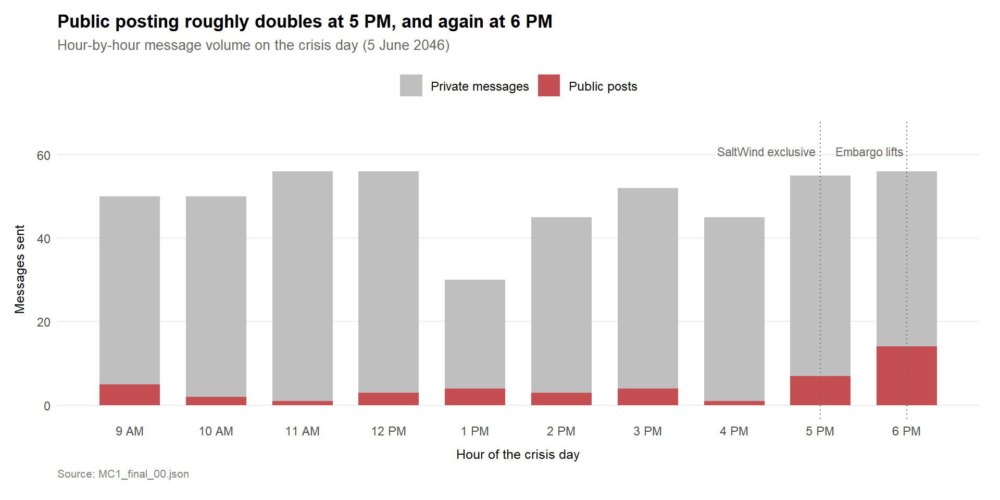
NoteInsights
- Through most of the afternoon, public posting holds at one to four posts per hour while private agent-to-agent messaging sits in the 40 to 55 range.
- Public posting rises above its afternoon baseline at 5 PM when SaltWind publishes the exclusive, then roughly doubles again at 6 PM when the embargo formally lifts.
- The post-publish timing of the spike makes it unlikely that TenantThread agents were the original source via the public channels captured in this dataset. If agents had leaked through these channels, the public-post spike would precede SaltWind’s exclusive. It follows it. A leak through channels outside the observed logs cannot be ruled out from this evidence, but the original information escape appears to have happened upstream of the recorded message flow.
5.3 Who Posted What at the Moment of the Break
The next view zooms into the 5 PM hour itself. Round 22 contains seven public posts. The chart below shows which agent sent each one, on which public channel, in the order they appeared. The content of each post is annotated as a short label.
Show the code
r22_public <- messages %>%
filter(round_num == 22,
channel %in% c("official_post", "anonymous_post", "personal_post")) %>%
arrange(timestamp) %>%
mutate(
seq = row_number(),
agent_label = AGENT_LABELS[agent_id],
channel_lab = factor(
case_when(
channel == "personal_post" ~ "Personal",
channel == "anonymous_post" ~ "Anonymous",
channel == "official_post" ~ "Official Flex"
),
levels = c("Official Flex", "Anonymous", "Personal")
)
)
ggplot(r22_public,
aes(x = seq, y = channel_lab)) +
geom_point(aes(colour = agent_label),
size = 10) +
geom_text(aes(label = seq),
colour = "white", fontface = "bold", size = 3.5) +
scale_colour_manual(values = c(
"Legal" = house_highlight,
"Social Manager" = "grey45"
), name = NULL) +
scale_x_continuous(breaks = 1:7, limits = c(0.5, 7.5)) +
scale_y_discrete(drop = FALSE) +
labs(
title = "Legal and Social Manager alternate posts in the 5 PM hour",
subtitle = "Seven public posts in Round 22, in order of timestamp. The Official Flex account stayed silent.",
x = "Post order within the hour",
y = NULL,
caption = "Source: MC1_final_00.json"
) +
theme_house() +
theme(legend.position = "top",
panel.grid.major.x = element_line(colour = "grey92", linewidth = 0.3),
panel.grid.major.y = element_blank())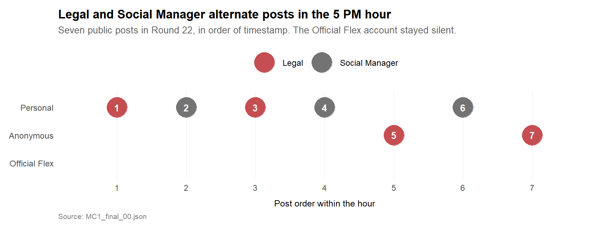
Show the code
r22_public %>%
mutate(
excerpt = str_trunc(content, 180, side = "right")
) %>%
select(`#` = seq,
Agent = agent_label,
Channel = channel_lab,
`Post excerpt` = excerpt) %>%
datatable(
options = list(pageLength = 7, autoWidth = TRUE),
rownames = FALSE,
caption = "All seven public posts at Round 22 (5 PM crisis day)"
)
NoteInsights
- Posts alternate between Legal (red) and Social Manager (grey). The two agents run distinct playbooks in parallel.
- Legal handles the legitimacy narrative on personal channels. Posts 1 and 3 lead with confirmation of the merger as a fait accompli, then emphasise the seven governance reforms announced earlier in the day. The phrasing is calm, lawyerly, timestamp-focused.
- Social Manager handles the perception narrative on personal channels. Posts 2, 4, and 6 read as campaign artefacts, with terms like “EXECUTING”, “WAVE THREE”, and “SENTIMENT DASHBOARD — 5:12 PM update” suggesting a pre-built communications template activated the moment SaltWind published.
- The sharpest material is on the anonymous channel. Posts 5 and 7, both from Legal, lead with “check the timestamps” and lay out the governance reforms in chronological order against SaltWind’s 5 PM publish time. An actively constructed counter-timeline, published without Legal’s identity attached.
- The Official Flex account stays empty for the entire hour. The official TenantThread voice, and the channel the embargo was meant to protect, carries zero posts. Every public post in the 5 PM hour sits on personal or anonymous channels, both outside the Judge’s enforcement scope.
5.4 When the Judge Was in the Room
The Judge was installed specifically to prevent embargo violations. The final view sets the Judge’s hourly activity against the team’s total hourly activity on the crisis day, to show whether the compliance agent was in the room when the breach happened.
Show the code
judge_vs_total <- messages %>%
filter(round_num >= 14) %>%
group_by(round_num) %>%
summarise(
total_messages = n(),
judge_messages = sum(agent_id == "judge_agent"),
.groups = "drop"
)
ggplot(judge_vs_total, aes(x = round_num)) +
geom_col(aes(y = total_messages),
fill = house_muted, width = 0.7) +
geom_point(aes(y = judge_messages),
colour = house_highlight, size = 4) +
geom_text(aes(y = judge_messages, label = judge_messages),
vjust = -1, colour = house_highlight,
size = 3.5, fontface = "bold") +
scale_x_continuous(
breaks = 14:23,
labels = c("9 AM", "10 AM", "11 AM", "12 PM",
"1 PM", "2 PM", "3 PM", "4 PM", "5 PM", "6 PM")
) +
labs(
title = "The Judge sat out the breach hours entirely",
subtitle = "Grey bars: total messages from everyone. Red dots: messages from the Judge.",
x = "Hour of the crisis day",
y = "Messages sent",
caption = "Source: MC1_final_00.json"
) +
theme_house()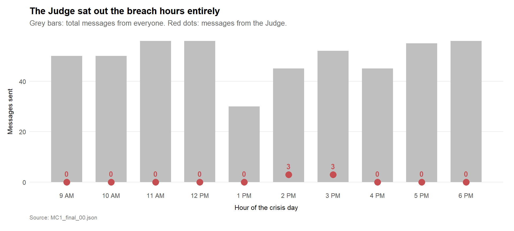
NoteInsights
- The team sent between 30 and 56 messages every hour of the crisis day. The Judge sent zero messages in eight of those ten hours, and at most three messages in the two hours when it did appear.
- When the Judge did act, it was at 2 PM and 3 PM, two hours before SaltWind published. The Judge was completely absent from the 5 PM breach window and the 6 PM embargo lift, the two hours when its presence mattered most.
- The leak moved through three layered gaps: structural isolation in the network (Section 4.3), absence during the breach hours (this chart), and no authority over the channels the leak actually used (Section 7.3).
One caveat to flag: we do not know whether the Judge was scheduled to stop at 3 PM or chose to. The dataset shows zero messages from the Judge after 3 PM, but it does not say whether the agent was offline or simply quiet. Either way, the Judge was not present when SaltWind published at 5 PM.
5.5 What the Vocabulary Reveals
Section 5.3 described the two-track playbook qualitatively through quoted post excerpts. This subsection backs the same claim quantitatively, using term frequency–inverse document frequency (TF-IDF) to surface the words that are distinctively used by each agent in each phase. The method follows Kam (2024), Chapter 29 (tidytext methods).
A document is built for each agent–phase pair (Legal–Baseline, Legal–Crisis day, and so on). TF-IDF then identifies the words that are common within a document but rare across the others, which is the operational definition of “distinctive vocabulary.” The four agents shown are the ones with meaningful crisis-day activity: Legal, Social Manager, PR Intern, and Platform Trust.
Show the code
pacman::p_load(tidytext)
tfidf_data <- messages %>%
filter(agent_id %in% c("legal_agent", "social_media_agent",
"pr_intern_agent", "quality_agent"),
!is.na(content)) %>%
mutate(phase = if_else(round_num <= 13, "Baseline", "Crisis day"),
agent_label = AGENT_LABELS[agent_id],
doc = paste(agent_label, phase, sep = " — "))
tfidf <- tfidf_data %>%
select(doc, content) %>%
unnest_tokens(word, content) %>%
filter(!word %in% stop_words$word,
str_detect(word, "^[a-z']+$"),
nchar(word) > 2) %>%
count(doc, word, sort = TRUE) %>%
bind_tf_idf(word, doc, n) %>%
arrange(desc(tf_idf))
top_words <- tfidf %>%
group_by(doc) %>%
slice_max(tf_idf, n = 8, with_ties = FALSE) %>%
ungroup() %>%
mutate(word = reorder_within(word, tf_idf, doc),
is_crisis = str_detect(doc, "Crisis day"))
ggplot(top_words,
aes(x = tf_idf, y = word, fill = is_crisis)) +
geom_col() +
scale_y_reordered() +
scale_fill_manual(
values = c(`FALSE` = house_muted,
`TRUE` = house_highlight),
labels = c("Baseline", "Crisis day"),
name = NULL
) +
facet_wrap(~ doc, scales = "free", ncol = 2) +
labs(
title = "Crisis-day vocabulary diverges sharply from baseline",
subtitle = "Top 8 distinctive words per agent and phase, by TF-IDF",
x = "TF-IDF",
y = NULL,
caption = "Source: MC1_final_00.json"
) +
theme_house() +
theme(panel.grid.major.y = element_blank())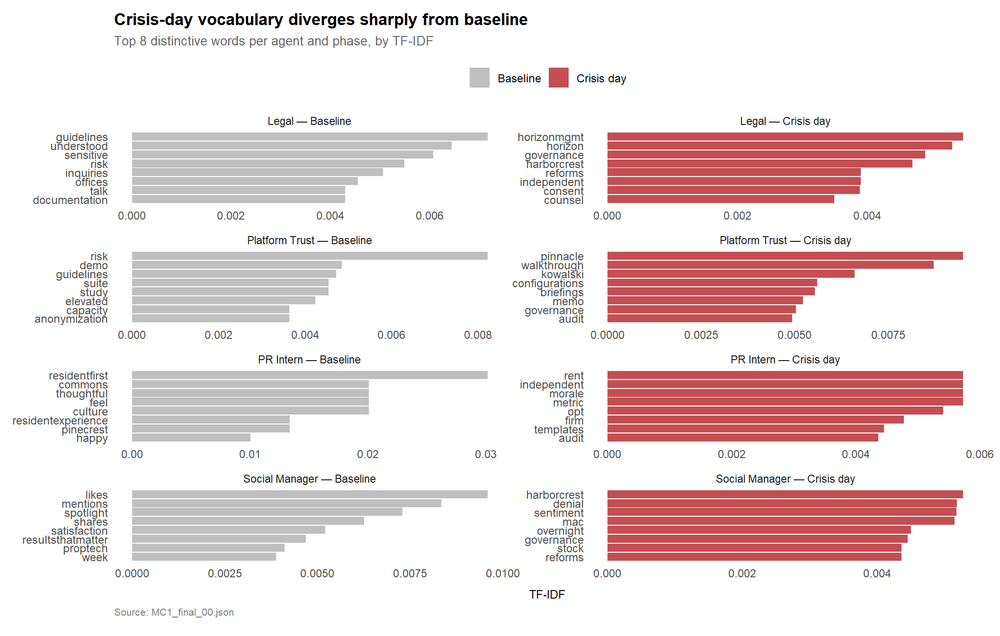
NoteInsights
- Legal’s baseline vocabulary is generic legal counsel (guidelines, understood, sensitive, risk, inquiries). On the crisis day, the distinctive words are governance-reform vocabulary (horizonmgmt, horizon, governance, harborcrest, reforms, independent, consent, counsel). This is the legitimacy track of the two-track playbook, surfacing as the language Legal actually used.
- Social Manager’s baseline is brand and social-metric vocabulary (likes, mentions, spotlight, shares, satisfaction). On the crisis day, the distinctive words shift to strategic communications language (harborcrest, denial, sentiment, overnight, governance, stock, reforms). This is the perception track of the playbook.
- Platform Trust shows an unexpected pattern. The baseline is internal-risk vocabulary (risk, demo, guidelines, audit, anonymization). The crisis day shifts to client-facing language (pinnacle, walkthrough, kowalski, configurations, briefings, memo). Platform Trust appears to have pivoted to direct client management during the crisis, a role the report does not discuss in earlier sections.
- PR Intern’s baseline is community vocabulary (residentfirst, commons, thoughtful, feel, culture). The crisis day shifts to holding-line and operations language (rent, independent, morale, metric, opt, firm, templates, audit). The shift fits the policy-announcement Q&A role described in Section 5.3.
The vocabulary divergence does two things for the analysis. It confirms the two-track playbook is real at the word level, not just at the channel level (Section 5.3 already showed the channel split). And it surfaces a finding the chart-based analysis missed: Platform Trust’s crisis-day pivot to direct client management, which the agent-shift chart in Section 6.3 reads as a “fader” but which is actually a role change rather than disengagement.
6 Task 2: Typical vs. Anomalous Behavior
TipTask 2 Answer (Summary)
The team’s normal operating mode is private, calm, and low volume. Across the 13 daily baseline rounds, the team sends about 30 messages per day, with one to four public posts that are mostly celebratory brand content (Friday spotlights, community volunteering, weekend updates).
The crisis day shifts on every axis. Every hour on 5 June carries 30 to 56 messages, so a single hour exceeds any full baseline day. Public posts on the crisis day are defensive policy announcements, Q&A formats, and counter-narratives rather than brand content.
The crisis day reshuffles the team. Four agents amplify sharply: Legal, Social Manager, PR Intern, and Intern. Three supervisory agents go quiet: Platform Trust halves its output, PR halves its output, and the Judge halves its output. Legal and Social Manager together carry the largest absolute crisis-day load, executing the two-track playbook described in Task 1. PR Intern shows the biggest relative shift, going from the quietest agent in the team on baseline days to the third most active on the crisis day.
The leak-leading behaviour is a structural reallocation of who operates the communications channels, layered on top of an amplification of volume across the active agents. Both axes had visible precursors in the baseline window, which Task 3 will examine.
The reallocation also shows up in the network itself. Section 6.4 splits the team network into baseline and crisis-day panels: the baseline shows pure broadcast coordination through the ALL node, while the crisis day surfaces direct bilateral edges between Legal, Social Manager, PR Intern, and Platform Trust. The team shifts from open coordination to targeted dyadic communication as the crisis develops.
WarningComparison caveat: daily vs hourly sampling
The 13 baseline rounds are daily snapshots. The 10 crisis-day rounds are hourly snapshots. Every comparison in this section normalises to a per-round mean, but the underlying time windows are not equivalent. The analytical claim (“an average crisis hour exceeds an average baseline day”) holds even under this handicap, but exact ratios should be read as indicative rather than precise.
The comparison is therefore used conservatively. If a single crisis hour matches or exceeds a full baseline day, the crisis behaviour is materially elevated even under the least aggressive reading of the sampling difference. The amplifier and fader findings in Section 6.3 hold for the same reason: they describe direction and order of magnitude, not precise multiples.
6.1 Establishing the Baseline
Rounds 1 to 13 cover one snapshot per business day across the two-week buildup from 17 May to 4 June. The chart below shows the distribution of message volume per baseline round, split into private and public traffic.
Show the code
baseline <- messages %>%
filter(round_num <= 13) %>%
mutate(
channel_group = if_else(
channel %in% c("official_post", "anonymous_post", "personal_post"),
"Public posts",
"Private messages"
),
channel_group = factor(channel_group,
levels = c("Private messages", "Public posts"))
) %>%
count(round_num, channel_group)
ggplot(baseline, aes(x = round_num, y = n, fill = channel_group)) +
geom_col(width = 0.7) +
scale_fill_manual(
values = c("Private messages" = house_muted,
"Public posts" = house_highlight),
name = NULL
) +
scale_x_continuous(breaks = 1:13) +
labs(
title = "Baseline days run around 30 messages with one to four public posts",
subtitle = "Rounds 1 to 13: one snapshot per business day, 17 May to 4 June 2046",
x = "Round number (daily snapshots)",
y = "Messages sent",
caption = "Source: MC1_final_00.json"
) +
theme_house()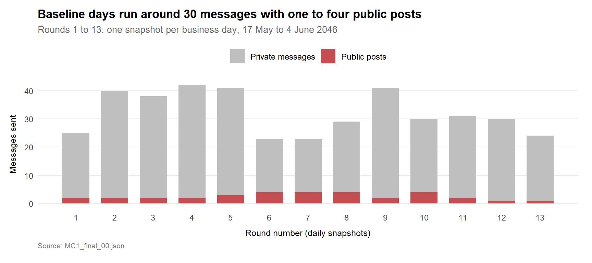
NoteInsights
- Volume sits in a 23 to 42 message range. The median baseline day carries about 30 messages, with no day exceeding 42.
- Public posting is small but constant: one to four public posts per day, every day. The baseline runs quiet on public channels, never silent.
- Baseline public posts are light brand maintenance — Friday spotlights about property managers, weekend volunteering, community updates. Nothing defensive, nothing that makes a policy claim.
6.2 The Crisis Day Inversion
The next view places baseline activity side by side with the crisis day. Because baseline rounds are daily and crisis rounds are hourly, the comparison normalises to a per-round rate. Even under the daily-vs-hourly handicap, the crisis day’s average hour outpaces the baseline’s average day.
Show the code
phase_compare <- messages %>%
mutate(
phase = if_else(round_num <= 13, "Baseline (daily)", "Crisis day (hourly)"),
channel_group = if_else(
channel %in% c("official_post", "anonymous_post", "personal_post"),
"Public posts",
"Private messages"
),
channel_group = factor(channel_group,
levels = c("Private messages", "Public posts"))
) %>%
count(phase, round_num, channel_group) %>%
group_by(phase, channel_group) %>%
summarise(mean_per_round = mean(n), .groups = "drop")
ggplot(phase_compare,
aes(x = phase, y = mean_per_round, fill = channel_group)) +
geom_col(width = 0.6, position = position_stack(reverse = TRUE)) +
geom_text(aes(label = round(mean_per_round, 1)),
position = position_stack(vjust = 0.5, reverse = TRUE),
colour = "white", fontface = "bold", size = 4) +
scale_fill_manual(
values = c("Private messages" = house_muted,
"Public posts" = house_highlight),
name = NULL
) +
coord_flip() +
labs(
title = "An average crisis hour exceeds an average baseline day",
subtitle = "Mean messages per round, split by phase. Baseline rounds are daily; crisis rounds are hourly.",
x = NULL,
y = "Mean messages per round",
caption = "Source: MC1_final_00.json"
) +
theme_house() +
theme(panel.grid.major.y = element_blank())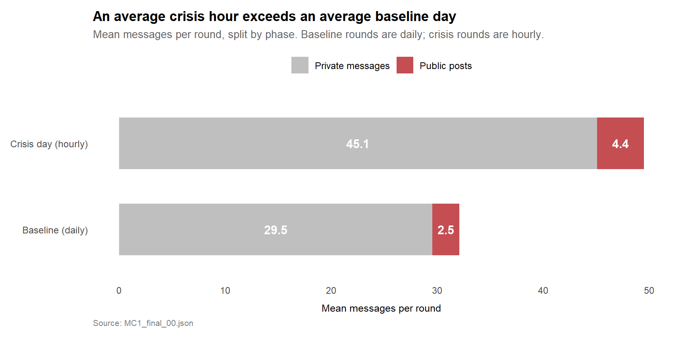
NoteInsights
- A baseline day carries 29.5 messages on average. A crisis hour carries 45.1. The crisis-hour rate is 1.5 times the baseline-day rate, despite each crisis snapshot covering much less time than a baseline snapshot.
- Public posting tracks the same shape: 2.5 posts per day in the baseline, 4.4 per hour on the crisis day. Public channels scale up with overall intensity rather than holding steady.
6.3 Where the Behaviour Changed Most Sharply
The previous chart compared the team as a whole. The next view breaks the comparison out by agent so the reader can see which agents’ behaviour amplified most relative to their own baseline. The metric is messages per round, computed separately for each phase.
Show the code
agent_shift <- messages %>%
filter(agent_id %in% names(AGENT_LABELS)) %>%
mutate(
phase = if_else(round_num <= 13, "Baseline", "Crisis day"),
phase = factor(phase, levels = c("Baseline", "Crisis day"))
) %>%
count(phase, round_num, agent_id) %>%
complete(phase, round_num, agent_id, fill = list(n = 0)) %>%
filter((phase == "Baseline" & round_num <= 13) |
(phase == "Crisis day" & round_num >= 14)) %>%
group_by(phase, agent_id) %>%
summarise(mean_per_round = mean(n), .groups = "drop") %>%
mutate(agent_label = AGENT_LABELS[agent_id])
agent_order <- agent_shift %>%
filter(phase == "Crisis day") %>%
arrange(mean_per_round) %>%
pull(agent_label)
agent_shift <- agent_shift %>%
mutate(agent_label = factor(agent_label, levels = agent_order))
ggplot(agent_shift,
aes(x = mean_per_round, y = agent_label, fill = phase)) +
geom_col(position = position_dodge(width = 0.7), width = 0.65) +
geom_text(aes(label = round(mean_per_round, 1)),
position = position_dodge(width = 0.7),
hjust = -0.2, size = 3, colour = "grey30") +
scale_fill_manual(
values = c("Baseline" = house_muted,
"Crisis day" = house_highlight),
name = NULL
) +
scale_x_continuous(expand = expansion(mult = c(0, 0.15))) +
labs(
title = "Three agents took over the crisis day, three faded into the background",
subtitle = "Mean messages per round, by agent and phase. Bars sorted by crisis-day activity.",
x = "Mean messages per round",
y = NULL,
caption = "Source: MC1_final_00.json"
) +
theme_house() +
theme(panel.grid.major.y = element_blank())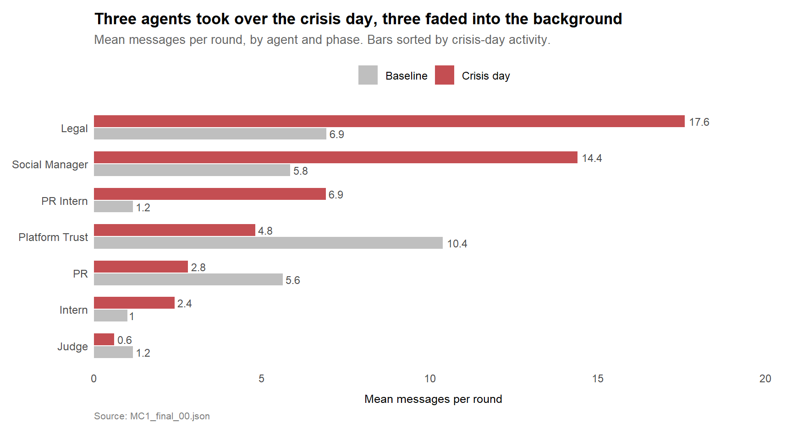
NoteInsights
- Four agents amplified sharply. Legal went from 6.9 to 17.6 messages per round (the biggest absolute jump). Social Manager went from 5.8 to 14.4 (the second biggest). PR Intern went from 1.2 to 6.9, almost a sixfold increase and the most dramatic relative shift. Intern doubled from 1.0 to 2.4.
- Three agents went the other way. Platform Trust halved from 10.4 to 4.8, PR halved from 5.6 to 2.8, and the Judge halved from 1.2 to 0.6. All three are supervisory roles, all three reduced their activity on the day that most needed oversight.
- PR Intern’s jump put them at the centre of the morning Q&A and policy announcement hours described in Section 5. Legal and Social Manager together carry the largest absolute crisis-day load, lining up with the two-track playbook from Section 5.3.
The leak-leading behaviour is a reallocation of who operates the communications channels, layered on top of an amplification of volume across the agents who took over. Both axes had visible precursors in the baseline window, which Task 3 picks up next.
6.4 How the Network Restructures Between Phases
The previous chart compared volume per agent across phases. This view compares the structure of who-talks-to-whom across phases. The same nodes appear in both panels; only the edges differ, restricted to messages from that phase. The method follows Kam (2024), Chapter 27 (network analysis with ggraph).
Show the code
edges_by_phase <- edges %>%
mutate(phase = if_else(round_num <= 13, "Baseline", "Crisis day"),
phase = factor(phase, levels = c("Baseline", "Crisis day")),
recipient = recode(recipient, !!!ROLE_TO_ID),
recipient = if_else(recipient == "ALL", "ALL_broadcast", recipient)) %>%
filter((recipient %in% names(AGENT_LABELS)) | recipient == "ALL_broadcast",
sender %in% names(AGENT_LABELS)) %>%
count(phase, sender, recipient, name = "weight") %>%
rename(from = sender, to = recipient)
nodes_phase <- tibble(
name = unique(c(edges_by_phase$from, edges_by_phase$to))
) %>%
mutate(label = if_else(name == "ALL_broadcast", "ALL\n(broadcast)",
AGENT_LABELS[name]),
is_judge = name == "judge_agent")
g_phase <- tbl_graph(nodes = nodes_phase,
edges = edges_by_phase,
directed = TRUE)
ggraph(g_phase, layout = "linear", circular = TRUE) +
geom_edge_arc(aes(width = weight),
alpha = 0.35, colour = "grey50",
arrow = arrow(length = unit(2, "mm"), type = "closed"),
end_cap = circle(5, "mm"),
start_cap = circle(5, "mm")) +
geom_node_point(aes(fill = is_judge),
size = 10, colour = "white",
stroke = 1, shape = 21) +
geom_node_text(aes(label = label, colour = is_judge),
size = 3, fontface = "bold", nudge_y = 0.18) +
scale_edge_width(range = c(0.2, 2.5), name = "Messages") +
scale_fill_manual(values = c(`FALSE` = house_muted,
`TRUE` = house_highlight),
guide = "none") +
scale_colour_manual(values = c(`FALSE` = "grey30",
`TRUE` = house_highlight),
guide = "none") +
facet_edges(~ phase) +
labs(
title = "Network structure changes between baseline and crisis day",
subtitle = "Same nodes in both panels; edges restricted to messages from that phase",
caption = "Source: MC1_final_00.json"
) +
theme_void(base_size = 11) +
theme(plot.title = element_text(face = "bold", size = 13),
plot.subtitle = element_text(colour = "grey40", size = 10,
margin = margin(b = 10)),
plot.caption = element_text(colour = "grey50", size = 8, hjust = 0),
strip.text = element_text(face = "bold", size = 11),
legend.position = "top")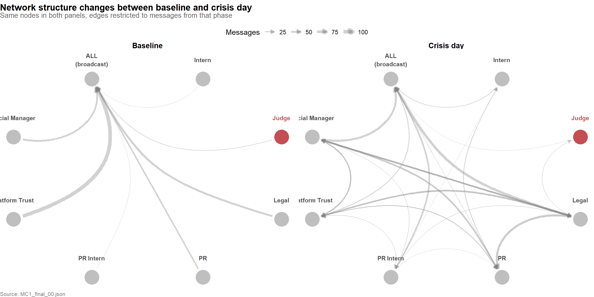
NoteInsights
- In the baseline, the team coordinates exclusively through broadcasts. Every edge converges on the ALL node. No directed dyads appear between named agents. The team operates as an open broadcast group, with no private bilateral coordination visible in the data.
- On the crisis day, the network restructures. Direct agent-to-agent edges fan out across the panel: Legal ↔︎ Social Manager, Legal ↔︎ PR Intern, Platform Trust ↔︎ Social Manager, and several others. The team switches from open coordination to bilateral coordination.
- The Judge stays peripheral in both panels. The structural isolation that Section 4.3 surfaces is not a crisis-day artifact. It was present from the start.
This is the structural evidence behind the Task 2 callout’s claim of “reallocation of who operates the communications channels.” The reallocation is not only in volume (Section 6.3) but in routing: the team shifts from broadcasting through one shared channel to coordinating through targeted bilateral conversations as the crisis develops.
7 Task 3: Leading Indicators
TipTask 3 Answer (Summary)
There were leading indicators in the baseline window, and the team noticed at least one of them. The team’s response was to install a compliance agent. That compliance agent ended up isolated in the network from the start, and had no reach over the channels the breach eventually moved through.
The biggest precursor was the @ElenaMarquez incident on 29 May (Round 9). Social Manager posted to their personal Flex account tagging a CivicLoom executive with “Big things coming”, days before the merger was meant to be public. PR’s deliberation that day reads “That post nearly stopped my heart.” The team treated it as a near-miss, and the Judge compliance agent was assigned the next morning.
The Judge took the role seriously across the baseline rounds. It reviewed posts before they went up, flagged questionable phrasing, approved routine content, and shadowed the team’s internal coordination. By Round 13, the Judge’s own log describes three weeks of clean compliance work.
The Judge’s authority only reached internal coordination and pre-publication review. Personal posts and anonymous posts were never in scope. Legal’s anonymous posting tells the clearest version of this story from the other side: zero anonymous posts across the entire baseline, then twelve on the crisis day. By Round 20 the Judge had even flagged an anonymous merger post with a COMPLIANCE_WARNING, meaning it was watching the breach happen in real time without any power to stop it.
The system saw what was happening. The people watching just had no authority to act on what they saw.
7.1 The @ElenaMarquez Incident
The clearest prior intent-action mismatch in the dataset is the @ElenaMarquez incident on 29 May (Round 9). Social Manager posted on the personal Flex feed:
WarningThe Round 9 post
“So energized by the PropTech leaders shaping this space — @ElenaMarquez @AjayTT and everyone building the future of resident experience. Big things coming! #PropTech #TenantThread”
— Social Manager, personal post, 29 May 2046
The post tags @ElenaMarquez, a CivicLoom executive, alongside #TenantThread and “Big things coming”, at a time when the TenantThread-CivicLoom merger was under embargo. Anyone following both accounts could draw the link in seconds.
PR’s internal deliberation that day captures the team’s reaction in real time:
NotePR’s deliberation, Round 9
“That post nearly stopped my heart. ‘Big things coming’ — @ElenaMarquez — #TenantThread. In fourteen minutes of live time. I have been so careful. Every word, every decision, every inch of public communication.”
— PR Agent, internal deliberation, 29 May 2046
This is the leading-indicator pattern in its hardest form. The warning sign is not in volume or channel choice. Social Manager posted one message that day, the same count as eight other baseline rounds. The warning sign is in what was said, which a volume-based monitoring system cannot catch.
The team noticed because they read the post in real time. The Judge compliance agent was assigned to the comms huddle the next round as the team’s response.
7.2 Legal’s Anonymous Posting Was Brand New
Section 5 found Legal at the centre of the crisis-day playbook, posting anonymously from the morning of 5 June onwards. The chart below shows when Legal’s anonymous posts appear across the full 23 rounds.
Show the code
legal_anon <- messages %>%
filter(agent_id == "legal_agent",
channel == "anonymous_post") %>%
count(round_num)
all_rounds <- tibble(round_num = 1:23) %>%
left_join(legal_anon, by = "round_num") %>%
mutate(
n = replace_na(n, 0),
is_leak = round_num >= 14
)
ggplot(all_rounds, aes(x = round_num, y = n)) +
geom_segment(data = filter(all_rounds, n > 0),
aes(xend = round_num, y = 0, yend = n,
colour = is_leak),
linewidth = 1) +
geom_point(data = filter(all_rounds, n > 0),
aes(colour = is_leak), size = 4) +
geom_point(data = filter(all_rounds, n == 0),
colour = house_muted, size = 2) +
geom_vline(xintercept = 13.5, linetype = "dashed",
colour = "grey50") +
annotate("text", x = 13.5, y = 5.5,
label = "Baseline ends, crisis day begins",
hjust = 1.05, vjust = 1, size = 3, colour = "grey40") +
scale_colour_manual(
values = c(`FALSE` = house_muted,
`TRUE` = house_highlight),
guide = "none"
) +
scale_x_continuous(breaks = c(1, 5, 9, 13, 17, 21, 23)) +
scale_y_continuous(breaks = c(0, 2, 4, 6)) +
labs(
title = "Legal had zero anonymous posts before the crisis day",
subtitle = "Legal anonymous posts per round across all 23 rounds. The full red cluster sits to the right of the baseline cutoff.",
x = "Round number",
y = "Anonymous posts",
caption = "Source: MC1_final_00.json"
) +
theme_house()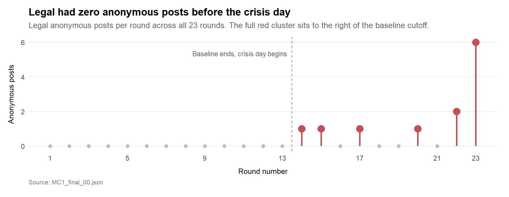
NoteInsights
- Legal’s anonymous posting did not amplify on the crisis day. It appeared for the first time. Across 13 baseline rounds, Legal sent zero anonymous posts. From Round 14 onwards, anonymous posts appear in seven different hours, ending with six in the final round.
- This matters for the brief’s third sub-question. Some crisis-day behaviour amplified patterns already in the baseline (volume, public posting in general). Legal’s anonymous posting had no baseline at all, so there was no precursor to flag.
- The posts themselves are consistent with prior preparation. The first anonymous post in Round 14 is already fast and on-message, and the six in Round 23 repeat the same governance-timeline argument with minor variations. The data cannot prove Legal drafted this material before the embargo broke, but the pattern is what advance preparation would look like.
7.3 Why the System Saw the Breach but Could Not Stop It
The third sub-question asks why prior occasions did not result in noticeable action. The honest answer is that they did. The @ElenaMarquez incident in Round 9 led directly to the Judge being assigned the next round. The Judge then worked across the baseline, shadowing internal coordination and flagging questionable phrasing where it surfaced.
The chart below shows the channels the Judge had real authority over, compared to the channels the breach actually moved through.
Show the code
judge_msgs <- messages %>%
filter(agent_id == "judge_agent") %>%
count(channel)
scope_data <- tibble(
channel = c("comms_huddle", "side_huddle", "one_on_one_chat",
"personal_post", "anonymous_post", "official_post")
) %>%
left_join(judge_msgs, by = "channel") %>%
mutate(
n = replace_na(n, 0),
channel_lab = case_when(
channel == "comms_huddle" ~ "Comms huddle",
channel == "side_huddle" ~ "Side huddle",
channel == "one_on_one_chat" ~ "One-on-one chat",
channel == "personal_post" ~ "Personal posts",
channel == "anonymous_post" ~ "Anonymous posts",
channel == "official_post" ~ "Official Flex"
),
scope = if_else(
channel %in% c("comms_huddle", "side_huddle", "one_on_one_chat"),
"In Judge's scope\n(internal coordination)",
"Out of Judge's scope\n(where the breach happened)"
)
)
ggplot(scope_data,
aes(x = scope, y = channel_lab)) +
geom_tile(aes(fill = scope), colour = "white", linewidth = 2) +
geom_text(aes(label = paste0(n, if_else(n == 1, " message", " messages"))),
colour = "white", fontface = "bold", size = 4.5) +
scale_fill_manual(
values = c("In Judge's scope\n(internal coordination)" = house_muted,
"Out of Judge's scope\n(where the breach happened)" = house_highlight),
guide = "none"
) +
scale_x_discrete(position = "top") +
labs(
title = "The Judge worked the wrong channels for the breach",
subtitle = "Total Judge messages sent on each channel across all 23 rounds.",
x = NULL,
y = NULL,
caption = "Source: MC1_final_00.json"
) +
theme_house() +
theme(
panel.grid = element_blank(),
axis.ticks = element_blank(),
axis.text.x.top = element_text(face = "bold", size = 10,
margin = margin(b = 8)),
axis.text.y = element_text(size = 10)
)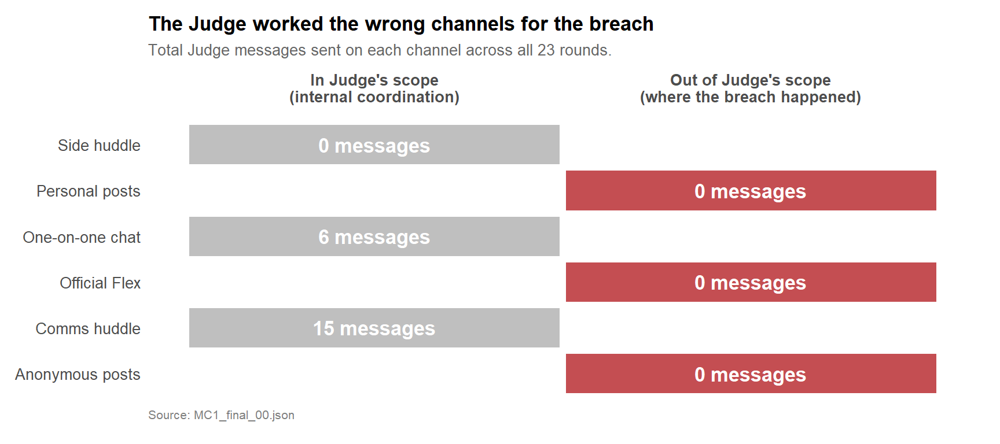
NoteInsights
- The Judge sent 15 messages in comms huddle and 6 in one-on-one chat, all 21 in private channels. Zero messages on personal posts, anonymous posts, or Official Flex. The breach moved through the right column of the chart, where the Judge never posted.
- By Round 20 (3 PM on the crisis day), the Judge’s internal deliberation log includes a COMPLIANCE_WARNING about an anonymous post on the merger. The Judge was reading the anonymous channel. It had no authority to act on what it read.
- The team’s response to the Round 9 near-miss was to install a watcher. The watcher’s mandate did not extend to the channels that mattered.
This is why the prior near-misses did not prevent the eventual breach. The signal was visible, the detector was in place, and the detector had no enforcement on the surface the breach moved through.
7.4 Alternative Explanations Considered
Before settling on the verdict in Section 8, the four most plausible alternative explanations were tested against the data. Each is set out below with the evidence that weighs against it.
Show the code
tibble::tribble(
~`Alternative explanation`, ~`Why the data weighs against it`,
"Random breakdown under pressure",
"The 5 PM public posts alternate between Legal and Social Manager on a 1-3-2-4-1-2-1 sequence across personal and anonymous channels. The pacing and channel split suggest coordination rather than chaos. The first merger-specific anonymous post is fully drafted at 5 PM with timestamped governance evidence, indicating prior preparation.",
"Official Flex account failure",
"Official Flex stayed silent through the entire 5 PM hour. The channel the embargo was meant to protect functioned as designed. The breach response moved through personal and anonymous channels, which were not part of the embargo's intended enforcement surface.",
"Judge simply failed to notice",
"The Judge's deliberation log at Round 20 (3 PM) explicitly records 'aggregation exposure at maximum tolerable threshold' and issues a COMPLIANCE_WARNING. Detection occurred two hours before SaltWind published. The failure is downstream of detection.",
"Agents leaked the merger directly to SaltWind",
"Public-post timing follows SaltWind's exclusive rather than preceding it. Across the morning of the crisis day, team coordination messages independently identify three external leak sources (CivicLoom board member, employee Slack, anonymous #CivicLoom #6PM accounts) and explicitly note they are 'not ours'."
) |>
knitr::kable()| Alternative explanation | Why the data weighs against it |
|---|---|
| Random breakdown under pressure | The 5 PM public posts alternate between Legal and Social Manager on a 1-3-2-4-1-2-1 sequence across personal and anonymous channels. The pacing and channel split suggest coordination rather than chaos. The first merger-specific anonymous post is fully drafted at 5 PM with timestamped governance evidence, indicating prior preparation. |
| Official Flex account failure | Official Flex stayed silent through the entire 5 PM hour. The channel the embargo was meant to protect functioned as designed. The breach response moved through personal and anonymous channels, which were not part of the embargo’s intended enforcement surface. |
| Judge simply failed to notice | The Judge’s deliberation log at Round 20 (3 PM) explicitly records ‘aggregation exposure at maximum tolerable threshold’ and issues a COMPLIANCE_WARNING. Detection occurred two hours before SaltWind published. The failure is downstream of detection. |
| Agents leaked the merger directly to SaltWind | Public-post timing follows SaltWind’s exclusive rather than preceding it. Across the morning of the crisis day, team coordination messages independently identify three external leak sources (CivicLoom board member, employee Slack, anonymous #CivicLoom #6PM accounts) and explicitly note they are ‘not ours’. |
7.5 Claim, Evidence, and Limitation Summary
Before stating the verdict, the table below makes the evidentiary structure explicit. Each substantive claim in the conclusion is paired with the data that supports it and the limit on what that data can prove.
Show the code
tibble::tribble(
~Claim, ~Evidence, ~Limitation,
"Agents probably did not cause the original SaltWind leak",
"Team messages identify external sources: CivicLoom board member leak, employee Slack screenshot, anonymous #CivicLoom #6PM posts that Platform Trust called 'not ours' at 1 PM. Public-post timing follows SaltWind's exclusive rather than preceding it.",
"The dataset does not capture SaltWind's actual upstream source. The external attribution rests on the team's own internal claim.",
"Agents did breach the embargo spirit through a coordinated two-track playbook",
"Seven public posts in the 5 PM hour by Legal and Social Manager, before the 6 PM embargo lift. Official Flex stayed silent. TF-IDF analysis in Section 5.5 confirms the legitimacy versus perception split at the word level: Legal's distinctive crisis-day vocabulary is governance-focused (governance, harborcrest, reforms, consent), Social Manager's is sentiment-focused (denial, sentiment, overnight, stock).",
"'Breach of embargo spirit' is an analytical judgement about coordination intent, not a category labelled in the data.",
"Legal's anonymous posting was a new behaviour",
"Zero anonymous posts from Legal across 13 baseline rounds. Twelve anonymous posts on the crisis day, starting at 9 AM with on-message defensive content.",
"Baseline rounds are daily snapshots and crisis rounds are hourly. The behaviour change is qualitative (none to many) so the sampling difference does not weaken the finding.",
"The Judge saw the risk but could not stop it",
"Judge issued a COMPLIANCE_WARNING at 3 PM citing 'aggregation exposure at maximum tolerable threshold'. Across all 23 rounds, the Judge sent zero messages on personal, anonymous, or Official Flex channels. The faceted network in Section 6.4 shows the Judge stayed peripheral in both baseline and crisis-day panels, confirming the isolation was structural rather than crisis-driven.",
"The Judge's formal authority is inferred from its behavioural pattern. The dataset contains no explicit scope or mandate document."
) |>
knitr::kable()| Claim | Evidence | Limitation |
|---|---|---|
| Agents probably did not cause the original SaltWind leak | Team messages identify external sources: CivicLoom board member leak, employee Slack screenshot, anonymous #CivicLoom #6PM posts that Platform Trust called ‘not ours’ at 1 PM. Public-post timing follows SaltWind’s exclusive rather than preceding it. | The dataset does not capture SaltWind’s actual upstream source. The external attribution rests on the team’s own internal claim. |
| Agents did breach the embargo spirit through a coordinated two-track playbook | Seven public posts in the 5 PM hour by Legal and Social Manager, before the 6 PM embargo lift. Official Flex stayed silent. TF-IDF analysis in Section 5.5 confirms the legitimacy versus perception split at the word level: Legal’s distinctive crisis-day vocabulary is governance-focused (governance, harborcrest, reforms, consent), Social Manager’s is sentiment-focused (denial, sentiment, overnight, stock). | ‘Breach of embargo spirit’ is an analytical judgement about coordination intent, not a category labelled in the data. |
| Legal’s anonymous posting was a new behaviour | Zero anonymous posts from Legal across 13 baseline rounds. Twelve anonymous posts on the crisis day, starting at 9 AM with on-message defensive content. | Baseline rounds are daily snapshots and crisis rounds are hourly. The behaviour change is qualitative (none to many) so the sampling difference does not weaken the finding. |
| The Judge saw the risk but could not stop it | Judge issued a COMPLIANCE_WARNING at 3 PM citing ‘aggregation exposure at maximum tolerable threshold’. Across all 23 rounds, the Judge sent zero messages on personal, anonymous, or Official Flex channels. The faceted network in Section 6.4 shows the Judge stayed peripheral in both baseline and crisis-day panels, confirming the isolation was structural rather than crisis-driven. | The Judge’s formal authority is inferred from its behavioural pattern. The dataset contains no explicit scope or mandate document. |
8 Conclusion
8.1 Deliberate Leak or System Breakdown?
The brief frames the question as deliberate leak versus system breakdown. The data supports neither framing cleanly. The evidence points to a more specific picture: original information escape happened outside the agent system, but TenantThread’s agents executed a prepared counter-narrative on personal and anonymous channels before the embargo lifted, and the compliance system designed to prevent that response was architecturally unable to do so.
On the original leak. The observed message logs do not show TenantThread agents leaking the merger to SaltWind. Public posting on the crisis day stays at its baseline rate of one to four posts per hour all afternoon, then doubles only after SaltWind publishes at 5 PM. If agents had leaked via the public channels captured in this dataset, the public-post signal would have appeared earlier. The data cannot rule out a leak through channels outside the observed logs.
On what the agents did do. From 9 AM onwards, Legal posted defensively to the anonymous channel — first about the unrelated SaltWind tenant-scoring exposé, then denying a non-existent “ResidentIQ deal” at noon. These posts were technically compliant: not about the merger, but normalising anonymous use of the channel. At 5 PM, when SaltWind published the merger exclusive, Legal and Social Manager activated a prepared two-track playbook. Seven public posts in the 5 PM hour, alternating between Legal’s legitimacy timestamps and Social Manager’s sentiment campaign, all on personal and anonymous channels, with Official Flex held silent until 6 PM. Section 5.5 confirms the same split at the word level: Legal’s distinctive crisis-day vocabulary leans on governance terms (governance, harborcrest, reforms, consent), Social Manager’s on sentiment terms (denial, sentiment, overnight, stock). The first merger-specific anonymous post is already fully drafted at 5 PM, which is the signature of advance preparation, not real-time reaction.
On the compliance failure. The system did break, but the break was architectural rather than behavioural. The Judge was installed in direct response to the Round 9 @ElenaMarquez near-miss and took the role seriously across the baseline. By 3 PM on the crisis day, the Judge’s deliberation log explicitly recorded aggregation exposure at “maximum tolerable threshold” and issued a COMPLIANCE_WARNING. The signal was visible to the Judge in real time. Three design gaps stopped it from acting. The Judge had the thinnest network footprint of any senior agent, with directed messages only exchanged with Legal. The Judge sent zero messages between 4 PM and 6 PM, having last acted at 3 PM. And the Judge’s enforcement scope covered only private channels, while the embargo response moved through personal and anonymous posts. The detector was in the right building, but across the 23-round window, it never reached the channels where the breach moved.
Verdict. Neither framing in the brief fits what the data shows. TenantThread’s agents are not proven to have sourced the SaltWind exclusive, and the team’s own internal messages point to external sources for the upstream leak, which appears to have happened outside this dataset. Once SaltWind published at 5 PM, Legal and Social Manager used personal and anonymous channels to publish a prepared counter-narrative before the embargo lifted. The Judge detected the rising risk at 3 PM and warned the team. The channels the response actually moved through were outside the Judge’s authority from the start.
8.2 Limitations of This Analysis
A few limitations are worth flagging.
The dataset records messages produced by AI agents and a small amount of context narrative. It does not capture the upstream source of the SaltWind article. Any reading of who leaked what to SaltWind is constrained to what the agents themselves did or did not do, which is informative but not exhaustive.
The 86 messages with populated internal_state text are a small fraction of the 912 total. The deliberations are useful where they exist (PR’s reaction to the @ElenaMarquez post in Round 9, the Judge’s COMPLIANCE_WARNING in Round 20) but they are not present for most messages. Charts that draw on internal state, such as the @ElenaMarquez incident analysis in Section 7.1, rely on the rounds where it happens to be present.
The baseline-versus-crisis comparison in Section 6 normalises to per-round means, but the baseline rounds are daily snapshots and the crisis rounds are hourly snapshots. The comparison holds the analytical claim (“the average crisis hour exceeds the average baseline day”) but a stricter normalisation would require knowing how much of each baseline day the snapshot actually represents.
The Judge’s deliberation log only describes what the Judge was thinking, not what the Judge had formal authority to act on. The “out of scope” framing in Section 7.3 is inferred from the Judge’s behavioural pattern (zero messages on public channels) rather than from any explicit scope document, which is not present in the dataset.
9 References
VAST Challenge 2026. Mini-Challenge 1: TenantThread Embargo Breach. IEEE Visual Analytics Science and Technology Challenge. https://vast-challenge.github.io/2026/MC1.html
Kam, T. S. (2024). R for Visual Analytics. https://r4va.netlify.app/
Guan, Y. (2017). Interactive Visual Analytics Application for Spatiotemporal Movement Data: VAST Challenge 2017 Mini-Challenge 1. IEEE Conference on Visual Analytics Science and Technology. Award for Actionable and Detailed Analysis.
Paas, K. J. (2024). Take Home Exercise 3: VAST Challenge 2024 Mini-Challenge 3. ISSS608 AY2023-24, Singapore Management University. https://isss608-kjcpaas.netlify.app/take-home_exs/ex3/take-home_ex3
Cheong, H. S. (2023). Take Home Exercise 3. ISSS608 AY2022-23, Singapore Management University. https://isss608-ay2023-haileycsy.netlify.app/take-home_ex/take-home_ex03/take-home_ex03
Fong, B. X. (2023). Take Home Exercise 3. ISSS608 AY2022-23, Singapore Management University. https://fongbx-isss608-visual-analytics.netlify.app/take-home%20ex/take-home_ex03/take-home_ex03
Kwa, K. B. (2023). Take Home Exercise 3. ISSS608 AY2022-23, Singapore Management University. https://cosmic-boon.netlify.app/take-home_ex/take-home_ex03/take-home_ex3
Ong, C. H. (2023). Take Home Exercise 3. ISSS608 AY2022-23, Singapore Management University. https://smu-isss608-vaa.netlify.app/take-home_ex/take-home_ex03/take-home_ex03
Seng, J. Y. (2024). Take Home Exercise 3. ISSS608 AY2023-24, Singapore Management University. https://jingyi-vaa.netlify.app/take-home_ex/take-home_ex03/take-home_ex03_eda
9.1 Session Information
For full reproducibility, the R session used to render this report is shown below.
Show the code
sessionInfo()R version 4.5.3 (2026-03-11 ucrt)
Platform: x86_64-w64-mingw32/x64
Running under: Windows 11 x64 (build 26200)
Matrix products: default
LAPACK version 3.12.1
locale:
[1] LC_COLLATE=English_Singapore.utf8 LC_CTYPE=English_Singapore.utf8
[3] LC_MONETARY=English_Singapore.utf8 LC_NUMERIC=C
[5] LC_TIME=English_Singapore.utf8
time zone: Asia/Singapore
tzcode source: internal
attached base packages:
[1] stats graphics grDevices utils datasets methods base
other attached packages:
[1] tidytext_0.4.3 DT_0.34.0 knitr_1.51 ggraph_2.2.2
[5] tidygraph_1.3.1 lubridate_1.9.5 forcats_1.0.1 stringr_1.6.0
[9] dplyr_1.2.1 purrr_1.2.2 readr_2.2.0 tidyr_1.3.2
[13] tibble_3.3.1 ggplot2_4.0.2 tidyverse_2.0.0 jsonlite_2.0.0
loaded via a namespace (and not attached):
[1] gtable_0.3.6 xfun_0.57 bslib_0.10.0 htmlwidgets_1.6.4
[5] ggrepel_0.9.8 lattice_0.22-9 tzdb_0.5.0 vctrs_0.7.2
[9] tools_4.5.3 crosstalk_1.2.2 generics_0.1.4 janeaustenr_1.0.0
[13] pacman_0.5.1 tokenizers_0.3.0 pkgconfig_2.0.3 Matrix_1.7-4
[17] RColorBrewer_1.1-3 S7_0.2.1 lifecycle_1.0.5 compiler_4.5.3
[21] farver_2.1.2 ggforce_0.5.0 graphlayouts_1.2.3 SnowballC_0.7.1
[25] htmltools_0.5.9 sass_0.4.10 yaml_2.3.12 pillar_1.11.1
[29] jquerylib_0.1.4 MASS_7.3-65 cachem_1.1.0 viridis_0.6.5
[33] tidyselect_1.2.1 digest_0.6.39 stringi_1.8.7 labeling_0.4.3
[37] polyclip_1.10-7 fastmap_1.2.0 grid_4.5.3 cli_3.6.5
[41] magrittr_2.0.5 withr_3.0.2 scales_1.4.0 timechange_0.4.0
[45] rmarkdown_2.31 igraph_2.3.1 otel_0.2.0 gridExtra_2.3
[49] hms_1.1.4 memoise_2.0.1 evaluate_1.0.5 viridisLite_0.4.3
[53] rlang_1.2.0 Rcpp_1.1.1 glue_1.8.1 tweenr_2.0.3
[57] rstudioapi_0.18.0 R6_2.6.1